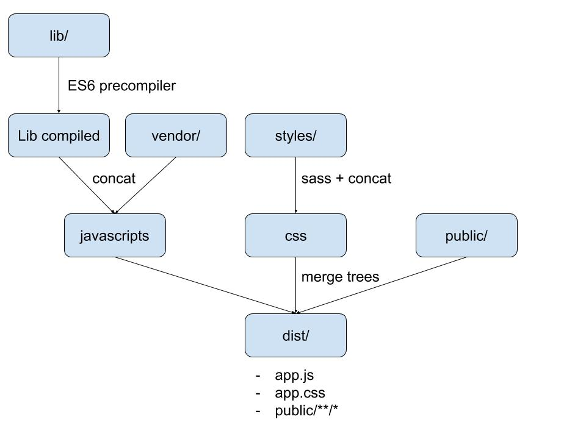

Broccoli.js
Trees
- Ni ficheros ni streams
- Carpetas o directorios (trees)
- Trees de entrada y de salida
- Trees n:1
var compileSass = require('broccoli-sass');
var styles = compileSass(['scss', 'sass-vendors'], 'main.scss', 'app.css');
Encadenamiento
- Plugins encadenables
- Abstraen tareas complejas
- 1:n trees de entrada
- 1 tree de salida
var JSHinter = require('broccoli-jshint');
var esTranspiler = require('broccoli-babel-transpiler');
var concat = require('broccoli-concat');
var tree = new JSHinter('app');
tree = esTranspiler(tree);
tree = concat(tree, {
outputFile: 'app.js'
});
Diff Grunt
module.exports = function(grunt) {
grunt.initConfig({
clean: {
dist: {
src: 'dist'
},
tmp: {
src: 'tmp'
}
},
eslint: {
src: {
src: ['app/**/*.js']
}
},
babel: {
options: {
comments: false,
sourceMap: false,
presets: ['es2015']
},
dist: {
files: {
'tmp/*.js': 'src/**/*.js'
}
}
},
concat: {
dist: {
src: ['tmp/*.js'],
dest: 'dist/app.js'
},
},
watch: {
js: {
files: 'app/**/*.js',
tasks: ['eslint', 'babel', 'concat']
}
}
});
// These plugins provide necessary tasks.
grunt.loadNpmTasks('grunt-contrib-clean');
grunt.loadNpmTasks('grunt-eslint');
grunt.loadNpmTasks('grunt-babel');
grunt.loadNpmTasks('grunt-contrib-concat');
grunt.loadNpmTasks('grunt-contrib-watch');
// Default task.
grunt.registerTask('default', ['clean', 'eslint', 'babel', 'concat']);
};
Diff Gulp
var gulp = require('gulp');
var babel = require('gulp-babel');
var eslint = require('gulp-eslint');
var concat = require('gulp-concat');
var watch = require('gulp-watch');
var runSequence = require('run-sequence')
gulp.task('default', ['eslint', 'build', 'watch']);
gulp.task('eslint', function() {
return gulp.src('app/**/*.js')
.pipe(eslint());
});
gulp.task('build', function() {
return gulp.src('app/**/*.js')
.pipe(babel({
'presets': ['es2015']
}))
.pipe(concat('app.js'))
.pipe(gulp.dest('dist'));
});
gulp.task('watch', function() {
watch('app/**/*.js', function() {
runSequence(
['eslint', 'build']
);
});
});
File System API
- Los trees no son streams
- Node 'fs'
- Directorios temporales privados
var Plugin = require('broccoli-plugin');
MyPlugin.prototype = Object.create(Plugin.prototype);
MyPlugin.prototype.constructor = MyPlugin;
function MyPlugin(inputNode) {
Plugin.call(this, [inputNode]);
}
MyPlugin.prototype.build = function() {
// Build from this.inputPaths[0] to this.outputPath
};
Caché
- Primera compilación lenta
- Directorio temporal
- LRU cache
- Se persiste la salida de cada plugin

Adiós al paralelismo
Brocfile.js
Es el fichero principal en donde escribiremos toda la lógica necesaria para compilar la aplicación.
- Directorio raíz
- Exporta un "tree"
/* Brocfile.js */
var tree = 'app/';
// @TODO transform tree
module.exports = tree;
CLI
Arrancar servidor
- --port [4200]
- --host [localhost]
broccoli serve
Deploy
broccoli build outputPath
Ejemplo 1
Constructor
- inputNodes: Tree/s de entrada
- Options:
- name: Nombre del plugin
- annotation: Texto descriptivo
- persistentOutput: Persistencia de temporales
var Plugin = require('broccoli-plugin');
MyPlugin.prototype = Object.create(Plugin.prototype);
MyPlugin.prototype.constructor = MyPlugin;
function MyPlugin(inputNodes, options) {
options = options || {};
Plugin.call(this, inputNodes, {
annotation: options.annotation
});
this.options = options;
}
Build
Es la función que se ejecuta en cada (re)build. Variables de contexto (sólo lectura):
- this.inputPaths: Tree/s de entrada
- this.outputPath: Directorio temporal de escritura (persistentOutput)
- this.cachePath: Directorio auxiliar de caché (persistente entre builds)
MyPlugin.prototype.build = function() {
var inputBuffer = fs.readFileSync(path.join(this.inputPaths[2], 'foo.txt'));
var outputBuffer = someCompiler(inputBuffer);
fs.writeFileSync(path.join(this.outputPath, 'bar.txt'), outputBuffer);
};
Ejemplo 2
Fight!
Debugging
broccoli-stewenv, log, debug, beforeBuild, afterBuild, wrapBuild, ...
// Brocfile.js
var Funnel = require('broccoli-funnel');
var ES2015 = require('broccoli-es6modules');
var log = require('broccoli-stew').log;
var app = new Funnel('app', {
destDir: 'my-app-name'
});
var loggedApp = log(app, { output: 'tree', label: 'my-app-name tree' });
var transpiledTree = new ES2015(loggedApp);
module.exports = transpiledTree;
Ejemplo 3
Debugging